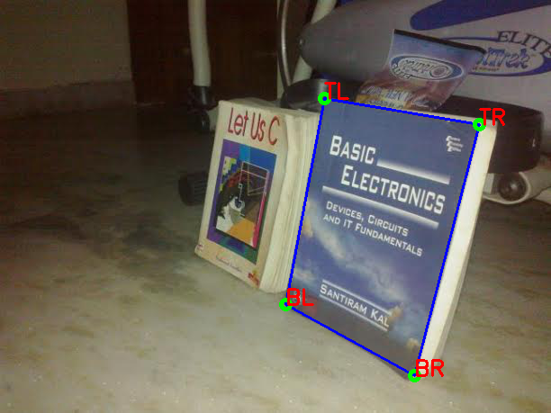

Contents
Image Warping
A demo program shows how perspective transformation applied on an image. Based on a sample code from MareArts blog.
Sources:
function varargout = warp_perspective_demo_gui(im)% load source image and set initial ROI corners (4 points clockwise) roi = []; if nargin < 1 if true im = fullfile(mexopencv.root(), 'test', 'books_right.jpg'); roi = [360 109; 532 138; 460 417; 317 338]; else im = fullfile(mexopencv.root(), 'test', 'box_in_scene.png'); roi = [243 188; 328 151; 388 294; 319 351]; end img = cv.imread(im, 'Color',true); elseif ischar(im) img = cv.imread(im, 'Color',true); else img = im; end if isempty(roi) roi = bsxfun(@rdivide, [size(img,2) size(img,1)], ... [1.7 4.2; 1.15 3.32; 1.33 1.1; 1.93 1.36]); end % create the UI and hook event handlers h = buildGUI(img, roi); if nargout > 0, varargout{1} = h; end opts = {'Interruptible','off', 'BusyAction','cancel'}; set(h.fig, 'CloseRequestFcn',@(~,~) delete(h.fig), ... 'WindowKeyPressFcn',@onType, opts{:}); set(h.fig(1), 'WindowButtonDownFcn',@onMouseDown, opts{:});
Callback Functions
function redraw() %REDRAW Apply transformation using current ROI and display results % reapply transformation out1 = drawROI(img, roi); [out2, sz] = warpROI(img, roi); % show results and ajust second plot to fit image set(h.img(1), 'CData',out1); set(h.img(2), 'CData',out2, 'XData',[1 sz(1)], 'YData',[1 sz(2)]); set(h.ax(2), 'XLim',[0 sz(1)]+0.5, 'YLim',[0 sz(2)]+0.5); pos = get(h.fig(2), 'Position'); set(h.fig(2), 'Position',[pos(1:2) sz]); drawnow; end function onType(~,e) %ONTYPE Event handler for key press on figure switch e.Key case 'h' helpdlg({ 'Use your mouse to select a point and move it' 'to see transformation changes.' '' 'Hot keys:' 'h - this help dialog' 'q - quit the program' 'r - change order of points to rotate transformation' 'i - change order of points to invert transformation ' }); case {'q', 'escape'} close(h.fig); case 'r' roi = circshift(roi, -1); redraw(); case 'i' roi = roi([2 1 4 3],:); redraw(); end end function onMouseDown(~,~) %ONMOUSEDOWN Event handler for mouse down on figure % hit-test for closest ROI corner pt = getCurrentPoint(h.ax(1)); d = sum(abs(bsxfun(@minus, roi, pt)), 2); [mn, pt_idx] = min(d); if mn < 20 % attach event handlers, and change mouse pointer set(h.fig(1), 'Pointer','cross', ... 'WindowButtonMotionFcn',{@onMouseMove, pt_idx}, ... 'WindowButtonUpFcn',@onMouseUp); end end function onMouseMove(~,~,idx) %ONMOUSEMOVE Event handler for mouse move on figure % move specified ROI corner pt = getCurrentPoint(h.ax(1)); roi(idx,:) = pt; redraw(); end function onMouseUp(~,~) %ONMOUSEUP Event handler for mouse up on figure % detach event handlers, and restore mouse pointer set(h.fig(1), 'Pointer','arrow', ... 'WindowButtonMotionFcn','', ... 'WindowButtonUpFcn',''); end
endHelper Functions
function out = drawROI(img, pts) %DRAWROI Show ROI corners with labels labels = {'TL', 'TR', 'BR', 'BL'}; out = cv.polylines(img, pts, 'Closed',true, 'Color',[0 0 255], 'Thickness',2); out = cv.circle(out, pts, 5, 'Color',[0 255 0], 'Thickness',3); out = cv.putText(out, labels, pts, ... 'FontScale',0.8, 'Color',[255 0 0], 'Thickness',2); end function [out, dsz] = warpROI(img, srcPts) %WARPROI Compute warped image from ROI % map ROI corners to corresponding destination rectangle len = diff(srcPts([1:end 1],:), 1, 1); % [TR-TL; BR-TR; BL-BR; TL-BL] len = cellfun(@norm, num2cell(len, 2)); % lengths of sides w = max(len(1), len(3)); h = max(len(2), len(4)); dstPts = [0 0; w 0; w h; 0 h]; % compute homography between points and apply persepective transformation dsz = round([w h]); H = cv.findHomography(srcPts, dstPts); out = cv.warpPerspective(img, H, 'DSize',dsz); end function p = getCurrentPoint(ax) %GETCURRENTPOINT Retrieve current mouse location p = get(ax, 'CurrentPoint'); p = p(1,1:2) - 1; end function h = buildGUI(img, roi) %BUILDGUI Creates the UI % apply initial perspective transformation out1 = drawROI(img, roi); out2 = warpROI(img, roi); sz1 = size(out1); sz2 = size(out2); % properties fprops = {'Menubar','none', 'Resize','on'}; aprops = {'Units','normalized', 'Position',[0 0 1 1]}; h = struct(); % show input image + ROI corners h.fig(1) = figure('Name','Image', ... 'Position',[100 200 sz1(2) sz1(1)], fprops{:}); h.ax(1) = axes('Parent',h.fig(1), aprops{:}); if mexopencv.isOctave() h.img(1) = imshow(out1); else h.img(1) = imshow(out1, 'Parent',h.ax(1)); end % show warped image h.fig(2) = figure('Name','Warped', ... 'Position',[200+sz1(2) 200 sz2(2) sz2(1)], fprops{:}); h.ax(2) = axes('Parent',h.fig(2), aprops{:}); if mexopencv.isOctave() h.img(2) = imshow(out2); else h.img(2) = imshow(out2, 'Parent',h.ax(2)); end end